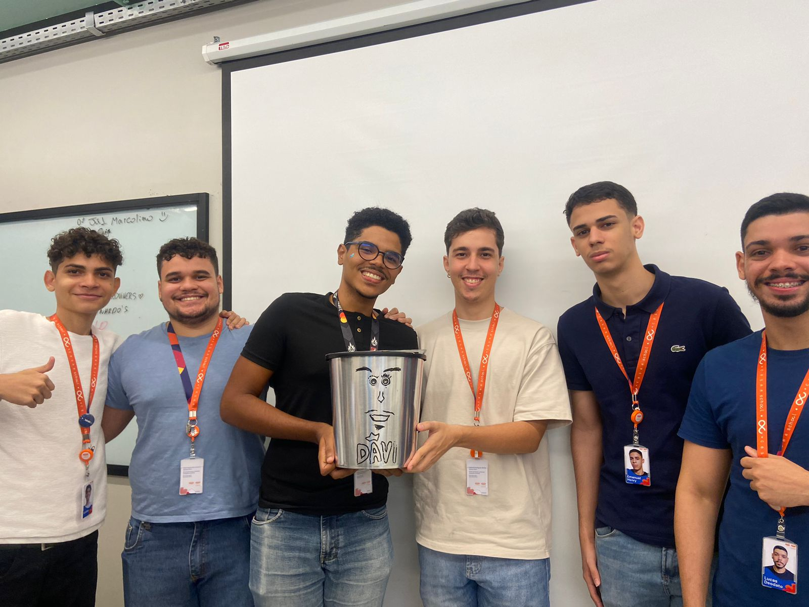

1
Fundamentos e Primeiros Passos

Disciplinas
Destaques
- Primeiro contato com lógica de programação em Python
- Desenvolvimento do mindset de resolução de problemas
- Familiarização com metodologias ágeis no Projeto Integrador
O primeiro semestre foi marcado pela ambientação com o ritmo universitário e com os fundamentos da computação. A transição para o pensamento lógico-algorítmico foi o maior desafio e aprendizado deste período.